Chapter Five
Magnetism and Matter
Magnetism and Matter

5.1 INTRODUCTION
Magnetic phenomena are universal in nature. Vast, distant galaxies, the tiny invisible atoms, men and beasts all are permeated through and through with a host of magnetic fields from a variety of sources. The earth’s magnetism predates human evolution. The word magnet is derived from the name of an island in Greece called magnesia where magnetic ore deposits were found, as early as 600 BC. Shepherds on this island complained that their wooden shoes (which had nails) at times stayed struck to the ground. Their iron-tipped rods were similarly affected. This attractive property of magnets made it difficult for them to move around.
The directional property of magnets was also known since ancient times. A thin long piece of a magnet, when suspended freely, pointed in the north-south direction. A similar effect was observed when it was placed on a piece of cork which was then allowed to float in still water. The name lodestone (or loadstone) given to a naturally occurring ore of iron-magnetite means leading stone. The technological exploitation of this property is generally credited to the Chinese. Chinese texts dating 400 BC mention the use of magnetic needles for navigation on ships. Caravans crossing the Gobi desert also employed magnetic needles.
A Chinese legend narrates the tale of the victory of the emperor Huang-ti about four thousand years ago, which he owed to his craftsmen (whom nowadays you would call engineers). These ‘engineers’ built a chariot on which they placed a magnetic figure with arms outstretched. Figure 5.1 is an artist’s description of this chariot. The figure swiveled around so that the finger of the statuette on it always pointed south. With this chariot, Huang-ti’s troops were able to attack the enemy from the rear in thick fog, and to defeat them.
In the previous chapter we have learned that moving charges or electric currents produce magnetic fields. This discovery, which was made in the early part of the nineteenth century is credited to Oersted, Ampere, Biot and Savart, among others.

Figure 5.1 The arm of the statuette mounted on the chariot always points south. This is an artist’s sketch of one of the earliest known compasses, thousands of years old.
In the present chapter, we take a look at magnetism as a subject in its own right.
Some of the commonly known ideas regarding magnetism are:
(i) The earth behaves as a magnet with the magnetic field pointing approximately from the geographic south to the north.
(ii) When a bar magnet is freely suspended, it points in the north-south direction. The tip which points to the geographic north is called the north pole and the tip which points to the geographic south is called the south pole of the magnet.
(iii) There is a repulsive force when north poles ( or south poles ) of two magnets are brought close together. Conversely, there is an attractive force between the north pole of one magnet and the south pole of
the other.
(iv) We cannot isolate the north, or south pole of a magnet. If a bar magnet is broken into two halves, we get two similar bar magnets with somewhat weaker properties. Unlike electric charges, isolated magnetic north and south poles known as magnetic monopoles do not exist.
(v) It is possible to make magnets out of iron and its alloys.
We begin with a description of a bar magnet and its behaviour in an external magnetic field. We describe Gauss’s law of magnetism. We then follow it up with an account of the earth’s magnetic field. We next describe how materials can be classified on the basis of their magnetic properties. We describe para-, dia-, and ferromagnetism. We conclude with a section on electromagnets and permanent magnets.
5.2 THE BAR MAGNET
One of the earliest childhood memories of the famous physicist Albert Einstein was that of a magnet gifted to him by a relative. Einstein was fascinated, and played endlessly with it. He wondered how the magnet could affect objects such as nails or pins placed away from it and not in any way connected to it by a spring or string.
We begin our study by examining iron filings sprinkled on a sheet of glass placed over a short bar magnet. The arrangement of iron filings is shown in Fig. 5.2.
The pattern of iron filings suggests that the magnet has two poles similar to the positive and negative charge of an electric dipole. As mentioned in the introductory section, one pole is designated the North pole and the other, the South pole. When suspended freely, these poles point approximately towards the geographic north and south poles, respectively. A similar pattern of iron filings is observed around a current carrying solenoid.

Figure 5.2 The arrangement of iron filings surrounding a bar magnet. The pattern mimics magnetic field lines. The pattern suggests that the bar magnet is a magnetic dipole.
5.2.1 The magnetic field lines
The pattern of iron filings permits us to plot the magnetic field lines*. This is shown both for the bar-magnet and the current-carrying solenoid in Fig. 5.3. For comparison refer to the Chapter 1, Figure 1.17(d). Electric field lines of an electric dipole are also displayed in Fig. 5.3(c). The magnetic field lines are a visual and intuitive realisation of the magnetic field. Their properties are:
(i) The magnetic field lines of a magnet (or a solenoid) form continuous closed loops. This is unlike the electric dipole where these field lines begin from a positive charge and end on the negative charge or escape to infinity.
(ii) The tangent to the field line at a given point represents the direction of the net magnetic field B at that point.
* In some textbooks the magnetic field lines are called magnetic lines of force. This nomenclature is avoided since it can be confusing. Unlike electrostatics the field lines in magnetism do not indicate the direction of the force on a (moving) charge.
(iii) The larger the number of field lines crossing per unit area, the stronger is the magnitude of the magnetic field B. In Fig. 5.3(a), B is larger around region ii than in region i .
(iv) The magnetic field lines do not intersect, for if they did, the direction of the magnetic field would not be unique at the point of intersection.
One can plot the magnetic field lines in a variety of ways. One way is to place a small magnetic compass needle at various positions and note its orientation. This gives us an idea of the magnetic field direction at various points in space.
5.2.2 Bar magnet as an equivalent solenoid
In the previous chapter, we have explained how a current loop acts as a magnetic dipole (Section 4.10). We mentioned Ampere’s hypothesis that all magnetic phenomena can be explained in terms of circulating currents. Recall that the magnetic dipole moment m associated with a current loop was defined to be m = NIA where N is the number of turns in the loop, I the current andA the area vector (Eq. 4.30).
The resemblance of magnetic field lines for a bar magnet and a solenoid suggest that a bar magnet may be thought of as a large number of circulating currents in analogy with a solenoid. Cutting a bar magnet in half is like cutting a solenoid. We get two smaller solenoids with weaker magnetic properties. The field lines remain continuous, emerging from one face of the solenoid and entering into the other face. One can test this analogy by moving a small compass needle in the neighbourhood of a bar magnet and a current-carrying finite solenoid and noting that the deflections of the needle are similar in both cases.
To make this analogy more firm we calculate the axial field of a finite solenoid depicted in Fig. 5.4 (a). We shall demonstrate that at large distances this axial field resembles that of a bar magnet.
Let the solenoid of Fig. 5.4(a) consists of n turns per unit length. Let its length be 2l and radius a. We can evaluate the axial field at a point P, at a distance r from the centre O of the solenoid. To do this, consider a circular element of thickness dx of the solenoid at a distance x from its centre. It consists of n d x turns. Let I be the current in the solenoid. In Section 4.6 of the previous chapter we have calculated the magnetic field on the axis of a circular current loop. From Eq. (4.13), the magnitude of the field at point P due to the circular element is
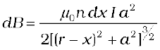
The magnitude of the total field is obtained by summing over all the elements — in other words by integrating from x = – l to x = + l. Thus,
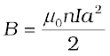
This integration can be done by trigonometric substitutions. This exercise, however, is not necessary for our purpose. Note that the range of x is from – l to + l. Consider the far axial field of the solenoid, i.e., r >> a and r >> l. Then the denominator is approximated by
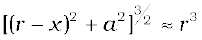
and 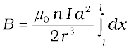
= 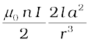 (5.1)
Note that the magnitude of the magnetic moment of the solenoid is, m = n (2l) I (πa2) — (total number of turns × current × cross-sectional area). Thus,
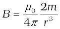 (5.2)
This is also the far axial magnetic field of a bar magnet which one may obtain experimentally. Thus, a bar magnet and a solenoid produce similar magnetic fields. The magnetic moment of a bar magnet is thus equal to the magnetic moment of an equivalent solenoid that produces the same magnetic field.
Some textbooks assign a magnetic charge (also called pole strength) +qmto the north pole and –qm to the south pole of a bar magnet of length 2l, and magnetic moment qm(2l). The field strength due to qm at a distance r from it is given by µ0qm/4πr2. The magnetic field due to the bar magnet is then obtained, both for the axial and the equatorial case, in a manner analogous to that of an electric dipole (Chapter 1). The method is simple and appealing. However, magnetic monopoles do not exist, and we have avoided this approach for that reason.
5.2.3 The dipole in a uniform magnetic field
The pattern of iron filings, i.e., the magnetic field lines gives us an approximate idea of the magnetic field B. We may at times be required to determine the magnitude of B accurately. This is done by placing a small compass needle of known magnetic moment m and moment of inertia I and allowing it to oscillate in the magnetic field. This arrangement is shown in Fig. 5.4(b).
The torque on the needle is [see Eq. (4.29)],
τ = m × B (5.3)
In magnitude τ = mB sinθ
Here τ is restoring torque and θ is the angle between m and B.
Therefore, in equilibrium 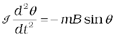
Negative sign with mB sinθ implies that restoring torque is in opposition to deflecting torque. For small values of θ in radians, we approximate
sin θ ≈ θ and get
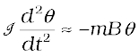
or, 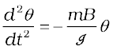
This represents a simple harmonic motion. The square of the angular frequency is ω2 = mB/I and the time period is,
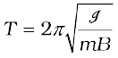 (5.4)
or  (5.5)
(5.5)
An expression for magnetic potential energy can also be obtained on lines similar to electrostatic potential energy.
The magnetic potential energy Um is given by
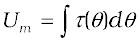
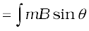 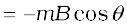
= -m.B (5.6)
We have emphasised in Chapter 2 that the zero of potential energy can be fixed at one’s convenience. Taking the constant of integration to be zero means fixing the zero of potential energy at θ = 90", i.e., when the needle is perpendicular to the field. Equation (5.6) shows that potential energy is minimum (= –mB) at θ = 0" (most stable position) and maximum (= +mB) at θ = 180" (most unstable position).
Example 5.1 In Fig. 5.4(b), the magnetic needle has magnetic moment 6.7 × 10–2 Am2 and moment of inertia I = 7.5 × 10–6 kg m2. It performs 10 complete oscillations in 6.70 s. What is the magnitude of the magnetic field?
Solution The time period of oscillation is,
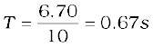
From Eq. (5.5)
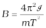
= 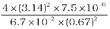
= 0.01 T
Example 5.2 A short bar magnet placed with its axis at 30" with an external field of 800 G experiences a torque of 0.016 Nm. (a) What is the magnetic moment of the magnet? (b) What is the work done in moving it from its most stable to most unstable position? (c) The bar magnet is replaced by a solenoid of cross-sectional area 2 × 10–4 m2 and 1000 turns, but of the same magnetic moment. Determine the current flowing through the solenoid.
Solution
(a) From Eq. (5.3), τ = m B sin θ, θ = 30", hence sinθ =1/2.
Thus, 0.016 = m × (800 × 10–4 T) × (1/2)
m = 160 × 2/800 = 0.40 A m2
(b) From Eq. (5.6), the most stable position is θ = 0" and the most unstable position is θ = 180". Work done is given by
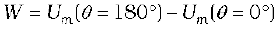
= 2 m B = 2 × 0.40 × 800 × 10–4 = 0.064 J
(c) From Eq. (4.30), ms = NIA. From part (a), ms = 0.40 A m2
0.40 = 1000 × I × 2 × 10–4
I = 0.40 × 104/(1000 × 2) = 2A
Example 5.3
(a) What happens if a bar magnet is cut into two pieces: (i) transverse to its length, (ii) along its length?
(b) A magnetised needle in a uniform magnetic field experiences a torque but no net force. An iron nail near a bar magnet, however, experiences a force of attraction in addition to a torque. Why?
(c) Must every magnetic configuration have a north pole and a south pole? What about the field due to a toroid?
(d) Two identical looking iron bars A and B are given, one of which is definitely known to be magnetised. (We do not know which one.) How would one ascertain whether or not both are magnetised? If only one is magnetised, how does one ascertain which one? [Use nothing else but the bars A and B.]
Solution
(a) In either case, one gets two magnets, each with a north and south pole.
(b) No force if the field is uniform. The iron nail experiences a non-uniform field due to the bar magnet. There is induced magnetic moment in the nail, therefore, it experiences both force and torque. The net force is attractive because the induced south pole (say) in the nail is closer to the north pole of magnet than induced north pole.
(c) Not necessarily. True only if the source of the field has a net non-zero magnetic moment. This is not so for a toroid or even for a straight infinite conductor.
(d) Try to bring different ends of the bars closer. A repulsive force in some situation establishes that both are magnetised. If it is always attractive, then one of them is not magnetised. In a bar magnet the intensity of the magnetic field is the strongest at the two ends (poles) and weakest at the central region. This fact may be used to determine whether A or B is the magnet. In this case, to see which
one of the two bars is a magnet, pick up one, (say, A) and lower one of its ends; first on one of the ends of the other (say, B), and then on the middle of B. If you notice that in the middle of B, A experiences no force, then B is magnetised. If you do not notice any change from the end to the middle of B, then A is magnetised.
5.2.4 The electrostatic analog
Comparison of Eqs. (5.2), (5.3) and (5.6) with the corresponding equations for electric dipole (Chapter 1), suggests that magnetic field at large distances due to a bar magnet of magnetic moment m can be obtained from the equation for electric field due to an electric dipole of dipole moment p, by making the following replacements:
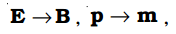 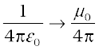
In particular, we can write down the equatorial field (BE) of a bar magnet at a distance r, for r >> l, where l is the size of the magnet:
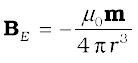 (5.7)
Likewise, the axial field (BA) of a bar magnet for r >> l is:
 (5.8)
(5.8)
Equation (5.8) is just Eq. (5.2) in the vector form. Table 5.1 summarises the analogy between electric and magnetic dipoles.
Table 5.1 The dipole analogy
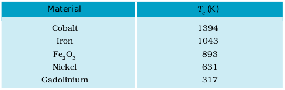
Example 5.4 What is the magnitude of the equatorial and axial fields due to a bar magnet of length 5.0 cm at a distance of 50 cm from its mid-point? The magnetic moment of the bar magnet is 0.40 A m2, the same as in Example 5.2.
Solution From Eq. (5.7)
 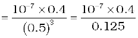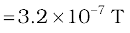
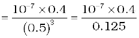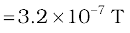
From Eq. (5.8), 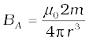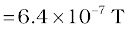
Example 5.5 Figure 5.5 shows a small magnetised needle P placed at a point O. The arrow shows the direction of its magnetic moment. The other arrows show different positions (and orientations of the magnetic moment) of another identical magnetised needle Q.
(a) In which configuration the system is not in equilibrium?
(b) In which configuration is the system in (i) stable, and (ii) unstable equilibrium?
(c) Which configuration corresponds to the lowest potential energy among all the configurations shown?

Figure 5.5
Solution
Potential energy of the configuration arises due to the potential energy of one dipole (say, Q) in the magnetic field due to other (P). Use the result that the field due to P is given by the expression [Eqs. (5.7) and (5.8)]:
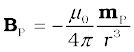 (on the normal bisector)
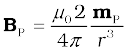 (on the axis)
where mP is the magnetic moment of the dipole P.
Equilibrium is stable when mQ is parallel to BP, and unstable when it is anti-parallel to BP.
For instance for the configuration Q3 for which Q is along the perpendicular bisector of the dipole P, the magnetic moment of Q is parallel to the magnetic field at the position 3. Hence Q3 is stable.
Thus,
(a) PQ1 and PQ2
(b) (i) PQ3, PQ6 (stable); (ii) PQ5, PQ4 (unstable)
(c) PQ6
5.3 MAGNETISM AND GAUSS’S LAW
In Chapter 1, we studied Gauss’s law for electrostatics. In Fig 5.3(c), we see that for a closed surface represented by i , the number of lines leaving the surface is equal to the number of lines entering it. This is consistent with the fact that no net charge is enclosed by the surface. However, in the same figure, for the closed surface ii , there is a net outward flux, since it does include a net (positive) charge.
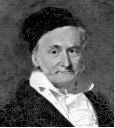
Karl Friedrich Gauss (1777 – 1855) He was a child prodigy and was gifted in mathematics, physics, engineering, astronomy and even land surveying. The properties of numbers fascinated him, and in his work he anticipated major mathematical development of later times. Along with Wilhelm Welser, he built the first electric telegraph in 1833. His mathematical theory of curved surface laid the foundation for the later work of Riemann.
The situation is radically different for magnetic fields which are continuous and form closed loops. Examine the Gaussian surfaces represented by i or ii in Fig 5.3(a) or Fig. 5.3(b). Both cases visually demonstrate that the number of magnetic field lines leaving the surface is balanced by the number of lines entering it. The net magnetic flux is zero for both the surfaces. This is true for any closed surface.
Figure 5.6
Consider a small vector area element ∆S of a closed surface S as in Fig. 5.6. The magnetic flux through ΔS is defined as ∆φB = B.∆S, where B is the field at ∆S. We divide S into many small area elements and calculate the individual flux through each. Then, the net flux φB is,
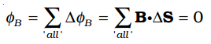(5.9)
where ‘all’ stands for ‘all area elements ∆S′. Compare this with the Gauss’s law of electrostatics. The flux through a closed surface in that case is given by
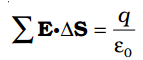
where q is the electric charge enclosed by the surface.
The difference between the Gauss’s law of magnetism and that for electrostatics is a reflection of the fact that isolated magnetic poles (also called monopoles) are not known to exist. There are no sources or sinks of B; the simplest magnetic element is a dipole or a current loop. All magnetic phenomena can be explained in terms of an arrangement of dipoles and/or current loops.
Thus, Gauss’s law for magnetism is:
The net magnetic flux through any closed surface is zero.
Example 5.6 Many of the diagrams given in Fig. 5.7 show magnetic field lines (thick lines in the figure) wrongly. Point out what is wrong with them. Some of them may describe electrostatic field lines correctly. Point out which ones.

Figure 5.7
Solution
(a) Wrong. Magnetic field lines can never emanate from a point, as shown in figure. Over any closed surface, the net flux of B must always be zero, i.e., pictorially as many field lines should seem to enter the surface as the number of lines leaving it. The field lines shown, in fact, represent electric field of a long positively charged wire. The correct magnetic field lines are circling the straight conductor, as described in Chapter 4.
(b) Wrong. Magnetic field lines (like electric field lines) can never cross each other, because otherwise the direction of field at the point of intersection is ambiguous. There is further error in the figure. Magnetostatic field lines can never form closed loops around empty space. A closed loop of static magnetic field line must enclose a region across which a current is passing. By contrast, electrostatic field lines can never form closed loops, neither in empty space, nor when the loop encloses charges.
(c) Right. Magnetic lines are completely confined within a toroid. Nothing wrong here in field lines forming closed loops, since each loop encloses a region across which a current passes. Note, for clarity of figure, only a few field lines within the toroid have been shown. Actually, the entire region enclosed by the windings contains magnetic field.
(d) Wrong. Field lines due to a solenoid at its ends and outside cannot be so completely straight and confined; such a thing violates Ampere’s law. The lines should curve out at both ends, and meet eventually to form closed loops.
(e) Right. These are field lines outside and inside a bar magnet. Note carefully the direction of field lines inside. Not all field lines emanate out of a north pole (or converge into a south pole). Around both the N-pole, and the S-pole, the net flux of the field is zero.
(f) Wrong. These field lines cannot possibly represent a magnetic field. Look at the upper region. All the field lines seem to emanate out of the shaded plate. The net flux through a surface surrounding the shaded plate is not zero. This is impossible for a magnetic field. The given field lines, in fact, show the electrostatic field lines around a positively charged upper plate and a negatively charged lower plate. The difference between Fig. [5.7(e) and (f)] should be carefully grasped.
(g) Wrong. Magnetic field lines between two pole pieces cannot be precisely straight at the ends. Some fringing of lines is inevitable. Otherwise, Ampere’s law is violated. This is also true for electric field lines.
Example 5.7
(a) Magnetic field lines show the direction (at every point) along which a small magnetised needle aligns (at the point). Do the magnetic field lines also represent the lines of force on a moving charged particle at every point?
(b) Magnetic field lines can be entirely confined within the core of a toroid, but not within a straight solenoid. Why?
(c) If magnetic monopoles existed, how would the Gauss’s law of magnetism be modified?
(d) Does a bar magnet exert a torque on itself due to its own field? Does one element of a current-carrying wire exert a force on another element of the same wire?
(e) Magnetic field arises due to charges in motion. Can a system have magnetic moments even though its net charge is zero?
Solution
(a) No. The magnetic force is always normal to B (remember magnetic force = qv × B). It is misleading to call magnetic field lines as lines of force.
(b) If field lines were entirely confined between two ends of a straight solenoid, the flux through the cross-section at each end would be non-zero. But the flux of field B through any closed surface must always be zero. For a toroid, this difficulty is absent because it has no ‘ends’.
(c) Gauss’s law of magnetism states that the flux of B through any closed surface is always zero 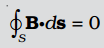.
If monopoles existed, the right hand side would be equal to the monopole (magnetic charge) qm enclosed by S. [Analogous to Gauss’s law of electrostatics, 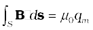 where qm is the (monopole) magnetic charge enclosed by S.]
(d) No. There is no force or torque on an element due to the field produced by that element itself. But there is a force (or torque) on an element of the same wire. (For the special case of a straight wire, this force is zero.)
(e) Yes. The average of the charge in the system may be zero. Yet, the mean of the magnetic moments due to various current loops may not be zero. We will come across such examples in connection with paramagnetic material where atoms have net dipole moment through their net charge is zero.

Geomagnetic field frequently asked questions
http://www.ngdc.noaa.gov/geomag/
5.4 THE EARTH’S MAGNETISM
Earlier we have referred to the magnetic field of the earth. The strength of the earth’s magnetic field varies from place to place on the earth’s surface; its value being of the order of 10–5 T.
What causes the earth to have a magnetic field is not clear. Originally the magnetic field was thought of as arising from a giant bar magnet placed approximately along the axis of rotation of the earth and deep in the interior. However, this simplistic picture is certainly not correct. The magnetic field is now thought to arise due to electrical currents produced by convective motion of metallic fluids (consisting mostly of molten iron and nickel) in the outer core of the earth. This is known as the dynamo effect.
The magnetic field lines of the earth resemble that of a (hypothetical) magnetic dipole located at the centre of the earth. The axis of the dipole does not coincide with the axis of rotation of the earth but is presently titled by approximately 11.3" with respect to the later. In this way of looking at it, the magnetic poles are located where the magnetic field lines due to the dipole enter or leave the earth. The location of the north magnetic pole is at a latitude of 79.74" N and a longitude of 71.8" W, a place somewhere in north Canada. The magnetic south pole is at 79.74" S, 108.22" E in the Antarctica.
The pole near the geographic north pole of the earth is called the north magnetic pole. Likewise, the pole near the geographic south pole is called the south magnetic pole. There is some confusion in the nomenclature of the poles. If one looks at the magnetic field lines of the earth (Fig. 5.8), one sees that unlike in the case of a bar magnet, the field lines go into the earth at the north magnetic pole (Nm) and come out from the south magnetic pole (Sm). The convention arose because the magnetic north was the direction to which the north pole of a magnetic needle pointed; the north pole of a magnet was so named as it was the north seeking pole. Thus, in reality, the north magnetic pole behaves like the south pole of a bar magnet inside the earth and vice versa.

Figure 5.8 The earth as a giant magnetic dipole.
Example 5.8 The earth’s magnetic field at the equator is approximately 0.4 G. Estimate the earth’s dipole moment.
Solution From Eq. (5.7), the equatorial magnetic field is,
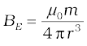
We are given that BE ~ 0.4 G = 4 × 10–5 T. For r, we take the radius of the earth 6.4 × 106 m. Hence,
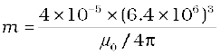=4 × 102 × (6.4 × 106)3 (µ0/4π = 10–7)
= 1.05 × 1023 A m2
This is close to the value 8 × 1022 A m2 quoted in geomagnetic texts.
5.4.1 Magnetic declination and dip
Consider a point on the earth’s surface. At such a point, the direction of the longitude circle determines the geographic north-south direction, the line of longitude towards the north pole being the direction of true north. The vertical plane containing the longitude circle and the axis of rotation of the earth is called the geographic meridian. In a similar way, one can define magnetic meridian of a place as the vertical plane which passes through the imaginary line joining the magnetic north and the south poles. This plane would intersect the surface of the earth in a longitude like circle. A magnetic needle, which is free to swing horizontally, would then lie in the magnetic meridian and the north pole of the needle would point towards the magnetic north pole. Since the line joining the magnetic poles is titled with respect to the geographic axis of the earth, the magnetic meridian at a point makes angle with the geographic meridian. This, then, is the angle between the true geographic north and the north shown by a compass needle. This angle is called the magnetic declination or simply declination (Fig. 5.9).

The declination is greater at higher latitudes and smaller near the equator. The declination in India is small, it being 0"41′ E at Delhi and 0"58′ W at Mumbai. Thus, at both these places a magnetic needle shows the true north quite accurately.
There is one more quantity of interest. If a magnetic needle is perfectly balanced about a horizontal axis so that it can swing in a plane of the magnetic meridian, the needle would make an angle with the horizontal (Fig. 5.10). This is known as the angle of dip (also known as inclination). Thus, dip is the angle that the total magnetic field BE of the earth makes with the surface of the earth. Figure 5.11 shows the magnetic meridian plane at a point P on the surface of the earth. The plane is a section through the earth. The total magnetic field at P can be resolved into a horizontal component HE and a vertical component ZE. The angle that BE makes with HE is the angle of dip, I.


In most of the northern hemisphere, the north pole of the dip needle tilts downwards. Likewise in most of the southern hemisphere, the south pole of the dip needle tilts downwards.
To describe the magnetic field of the earth at a point on its surface, we need to specify three quantities, viz., the declination D, the angle of dip or the inclination I and the horizontal component of the earth’s field HE. These are known as the element of the earth’s magnetic field.
Representing the verticle component by ZE, we have
ZE = BE sinI [5.10(a)]
HE = BE cosI [5.10(b)]
which gives,
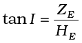 [5.10(c)]
What happens to my compass needles at the poles?
A compass needle consists of a magnetic needle which floats on a pivotal point. When the compass is held level, it points along the direction of the horizontal component of the earth’s magnetic field at the location. Thus, the compass needle would stay along the magnetic meridian of the place. In some places on the earth there are deposits of magnetic minerals which cause the compass needle to deviate from the magnetic meridian. Knowing the magnetic declination at a place allows us to correct the compass to determine the direction of true north.
So what happens if we take our compass to the magnetic pole? At the poles, the magnetic field lines are converging or diverging vertically so that the horizontal component is negligible. If the needle is only capable of moving in a horizontal plane, it can point along any direction, rendering it useless as a direction finder. What one needs in such a case is a dip needle which is a compass pivoted to move in a vertical plane containing the magnetic field of the earth. The needle of the compass then shows the angle which the magnetic field makes with the vertical. At the magnetic poles such a needle will point straight down.
Example 5.9 In the magnetic meridian of a certain place, the horizontal component of the earth’s magnetic field is 0.26G and the dip angle is 60". What is the magnetic field of the earth at this location?
Solution
It is given that HE = 0.26 G. From Fig. 5.11, we have
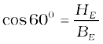
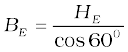
=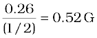
Earth’s magnetic field
It must not be assumed that there is a giant bar magnet deep inside the earth which is causing the earth’s magnetic field. Although there are large deposits of iron inside the earth, it is highly unlikely that a large solid block of iron stretches from the magnetic north pole to the magnetic south pole. The earth’s core is very hot and molten, and the ions of iron and nickel are responsible for earth’s magnetism. This hypothesis seems very probable. Moon, which has no molten core, has no magnetic field, Venus has a slower rate of rotation, and a weaker magnetic field, while Jupiter, which has the fastest rotation rate among planets, has a fairly strong magnetic field. However, the precise mode of these circulating currents and the energy needed to sustain them are not very well understood. These are several open questions which form an important area of continuing research.
The variation of the earth’s magnetic field with position is also an interesting area of study. Charged particles emitted by the sun flow towards the earth and beyond, in a stream called the solar wind. Their motion is affected by the earth’s magnetic field, and in turn, they affect the pattern of the earth’s magnetic field. The pattern of magnetic field near the poles is quite different from that in other regions of the earth.
The variation of earth’s magnetic field with time is no less fascinating. There are short term variations taking place over centuries and long term variations taking place over a period of a million years. In a span of 240 years from 1580 to 1820 AD, over which records are available, the magnetic declination at London has been found to change by 3.5", suggesting that the magnetic poles inside the earth change position with time. On the scale of a million years, the earth’s magnetic fields has been found to reverse its direction.
Basalt contains iron, and basalt is emitted during volcanic activity. The little iron magnets inside it align themselves parallel to the magnetic field at that place as the basalt cools and solidifies. Geological studies of basalt containing such pieces of magnetised region have provided evidence for the change of direction of earth’s magnetic field, several times in the past.
5.5 MAGNETISATION AND MAGNETIC INTENSITY
The earth abounds with a bewildering variety of elements and compounds. In addition, we have been synthesising new alloys, compounds and even elements. One would like to classify the magnetic properties of these substances. In the present section, we define and explain certain terms which will help us to carry out this exercise.
We have seen that a circulating electron in an atom has a magnetic moment. In a bulk material, these moments add up vectorially and they can give a net magnetic moment which is non-zero. We define magnetisation M of a sample to be equal to its net magnetic moment per unit volume:
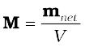 (5.11)
M is a vector with dimensions L–1 A and is measured in a units of A m–1.
Consider a long solenoid of n turns per unit length and carrying a current I. The magnetic field in the interior of the solenoid was shown to be given by
B0 = µ0 nI (5.12)
If the interior of the solenoid is filled with a material with non-zero magnetisation, the field inside the solenoid will be greater than B0. The net B field in the interior of the solenoid may be expressed as
B = B0 + Bm (5.13)
where Bm is the field contributed by the material core. It turns out that this additional field Bm is proportional to the magnetisation M of the material and is expressed as
Bm = µ0M (5.14)
where µ0 is the same constant (permittivity of vacuum) that appears in Biot-Savart’s law.
It is convenient to introduce another vector field H, called the magnetic intensity, which is defined by
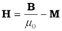 (5.15)
where H has the same dimensions as M and is measured in units of A m–1.
Thus, the total magnetic field B is written as
B = µ0 (H + M) (5.16)
We repeat our defining procedure. We have partitioned the contribution to the total magnetic field inside the sample into two parts: one, due to external factors such as the current in the solenoid. This is represented by H. The other is due to the specific nature of the magnetic material, namely M. The latter quantity can be influenced by external factors. This influence is mathematically expressed as
(5.17)
where χ, a dimensionless quantity, is appropriately called the magnetic susceptibility. It is a measure of how a magnetic material responds to an external field. Table 5.2 lists χ for some elements. It is small and positive for materials, which are called paramagnetic. It is small and negative for materials, which are termed diamagnetic. In the latter case M and H are opposite in direction. From Eqs. (5.16) and (5.17) we obtain,
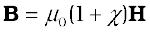 (5.18)
= µ0 µr H
= µ H (5.19)
where µr= 1 + χ, is a dimensionless quantity called the relative magnetic permeability of the substance. It is the analog of the dielectric constant in electrostatics. The magnetic permeability of the substance is µ and it has the same dimensions and units as µ0;
µ = µ0µr = µ0 (1+χ).
The three quantities χ, µr and µ are interrelated and only one of
them is independent. Given one, the other two may be easily determined.
Table 5.2 Magnetic susceptibility of some elements at 300 K
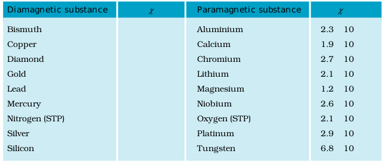
Example 5.10 A solenoid has a core of a material with relative permeability 400. The windings of the solenoid are insulated from the core and carry a current of 2A. If the number of turns is 1000 per metre, calculate (a) H, (b) M, (c) B and (d) the magnetising current Im.
Solution
(a) The field H is dependent of the material of the core, and is
H = nI = 1000 × 2.0 = 2 ×103 A/m.
(b) The magnetic field B is given by
B = µr µ0 H
= 400 × 4π ×10–7 (N/A2) × 2 × 103 (A/m)
= 1.0 T
(c) Magnetisation is given by
M = (B– µ0 H)/ µ0
= (µr µ0 H–µ0 H)/µ0 = (µr – 1)H = 399 × H
≅ 8 × 105 A/m
(d) The magnetising current IM is the additional current that needs to be passed through the windings of the solenoid in the absence of the core which would give a B value as in the presence of the core. Thus B = µr n0 (I + IM). Using I = 2A, B = 1 T, we get IM = 794 A.
5.6 MAGNETIC PROPERTIES OF MATERIALS
The discussion in the previous section helps us to classify materials as diamagnetic, paramagnetic or ferromagnetic. In terms of the susceptibility χ, a material is diamagnetic if χ is negative, para- if χ is positive and small, and ferro- if χ is large and positive.
A glance at Table 5.3 gives one a better feeling for these materials. Here ε is a small positive number introduced to quantify paramagnetic materials. Next, we describe these materials in some detail.
Table 5.3
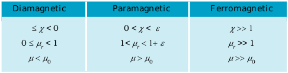
5.6.1 Diamagnetism
Diamagnetic substances are those which have tendency to move from stronger to the weaker part of the external magnetic field. In other words, unlike the way a magnet attracts metals like iron, it would repel a diamagnetic substance.
Figure 5.12(a) shows a bar of diamagnetic material placed in an external magnetic field. The field lines are repelled or expelled and the field inside the material is reduced. In most cases, as is evident from
Table 5.2, this reduction is slight, being one part in 105. When placed in a non-uniform magnetic field, the bar will tend to move from high to low field.
The simplest explanation for diamagnetism is as follows. Electrons in an atom orbiting around nucleus possess orbital angular momentum. These orbiting electrons are equivalent to current-carrying loop and thus possess orbital magnetic moment. Diamagnetic substances are the ones in which resultant magnetic moment in an atom is zero. When magnetic field is applied, those electrons having orbital magnetic moment in the same direction slow down and those in the opposite direction speed up. This happens due to induced current in accordance with Lenz’s law which you will study in Chapter 6. Thus, the substance develops a net magnetic moment in direction opposite to that of the applied field and hence repulsion.
Some diamagnetic materials are bismuth, copper, lead, silicon, nitrogen (at STP), water and sodium chloride. Diamagnetism is present in all the substances. However, the effect is so weak in most cases that it gets shifted by other effects like paramagnetism, ferromagnetism, etc.

Figure 5.12 Behaviour of magnetic field lines near a (a) diamagnetic, (b) paramagnetic substance.
The most exotic diamagnetic materials are superconductors. These are metals, cooled to very low temperatures which exhibits both perfect conductivity and perfect diamagnetism. Here the field lines are completely expelled! χ = –1 and µr = 0. A superconductor repels a magnet and (by Newton’s third law) is repelled by the magnet. The phenomenon of perfect diamagnetism in superconductors is called the Meissner effect, after the name of its discoverer. Superconducting magnets can be gainfully exploited in variety of situations, for example, for running magnetically levitated superfast trains.
5.6.2 Paramagnetism
Paramagnetic substances are those which get weakly magnetised when placed in an external magnetic field. They have tendency to move from a region of weak magnetic field to strong magnetic field, i.e., they get weakly attracted to a magnet.
The individual atoms (or ions or molecules) of a paramagnetic material possess a permanent magnetic dipole moment of their own. On account of the ceaseless random thermal motion of the atoms, no net magnetisation is seen. In the presence of an external field B0, which is strong enough, and at low temperatures, the individual atomic dipole moment can be made to align and point in the same direction as B0. Figure 5.12(b) shows a bar of paramagnetic material placed in an external field. The field lines gets concentrated inside the material, and the field inside is enhanced. In most cases, as is evident from Table 5.2, this enhancement is slight, being one part in 105. When placed in a non-uniform magnetic field, the bar will tend to move from weak field to strong.

Magnetic materials, domain, etc.:
http://www.ndt-ed.org/EducationResources/CommunityCollege/MagParticle/Physics/MagneticMatls.htm
Some paramagnetic materials are aluminium, sodium, calcium, oxygen (at STP) and copper chloride. Experimentally, one finds that the magnetisation of a paramagnetic material is inversely proportional to the absolute temperature T,
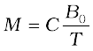 [5.20(a)]
or equivalently, using Eqs. (5.12) and (5.17)
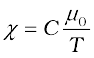 [5.20(b)]
This is known as Curie’s law, after its discoverer Pieree Curie (1859-1906). The constant C is called Curie’s constant. Thus, for a paramagnetic material both χ and µr depend not only on the material, but also (in a simple fashion) on the sample temperature. As the field is increased or the temperature is lowered, the magnetisation increases until it reaches the saturation value Ms, at which point all the dipoles are perfectly aligned with the field. Beyond this, Curie’s law [Eq. (5.20)] is no longer valid.
5.6.3 Ferromagnetism
Ferromagnetic substances are those which gets strongly magnetised when placed in an external magnetic field. They have strong tendency to move from a region of weak magnetic field to strong magnetic field, i.e., they get strongly attracted to a magnet.
The individual atoms (or ions or molecules) in a ferromagnetic material possess a dipole moment as in a paramagnetic material. However, they interact with one another in such a way that they spontaneously align themselves in a common direction over a macroscopic volume called domain. The explanation of this cooperative effect requires quantum mechanics and is beyond the scope of this textbook. Each domain has a net magnetisation. Typical domain size is 1mm and the domain contains about 1011 atoms. In the first instant, the magnetisation varies randomly from domain to domain and there is no bulk magnetisation. This is shown in Fig. 5.13(a). When we apply an external magnetic field B0, the domains orient themselves in the direction of B0 and simultaneously the domain oriented in the direction of B0 grow in size. This existence of domains and their motion in B0 are not speculations. One may observe this under a microscope after sprinkling a liquid suspension of powdered ferromagnetic substance of samples. This motion of suspension can be observed. Figure 5.12(b) shows the situation when the domains have aligned and amalgamated to form a single ‘giant’ domain.

Thus, in a ferromagnetic material the field lines are highly concentrated. In non-uniform magnetic field, the sample tends to move towards the region of high field. We may wonder as to what happens when the external field is removed. In some ferromagnetic materials the magnetisation persists. Such materials are called hard magnetic materials or hard ferromagnets. Alnico, an alloy of iron, aluminium, nickel, cobalt and copper, is one such material. The naturally occurring lodestone is another. Such materials form permanent magnets to be used among other things as a compass needle. On the other hand, there is a class of ferromagnetic materials in which the magnetisation disappears on removal of the external field. Soft iron is one such material. Appropriately enough, such materials are called soft ferromagnetic materials. There are a number of elements, which are ferromagnetic: iron, cobalt, nickel, gadolinium, etc. The relative magnetic permeability is >1000!

Hysterisis in magnetic materials:
http://hyperphysics.phy-astr.gsu.edu/hbase/solids/hyst.html
The ferromagnetic property depends on temperature. At high enough temperature, a ferromagnet becomes a paramagnet. The domain structure disintegrates with temperature. This disappearance of magnetisation with temperature is gradual. It is a phase transition reminding us of the melting of a solid crystal. The temperature of transition from ferromagnetic to paramagnetism is called the Curie temperature Tc. Table 5.4 lists the Curie temperature of certain ferromagnets. The susceptibility above the Curie temperature, i.e., in the paramagnetic phase is described by,
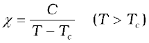 (5.21)
Table 5.4 Curie temperature Tc of some ferromagnetic materials
Example 5.11 A domain in ferromagnetic iron is in the form of a cube of side length 1µm. Estimate the number of iron atoms in the domain and the maximum possible dipole moment and magnetisation of the domain. The molecular mass of iron is 55 g/mole and its density is 7.9 g/cm3. Assume that each iron atom has a dipole moment of 9.27×10–24 A m2.
Solution The volume of the cubic domain is
V = (10–6 m)3 = 10–18 m3 = 10–12 cm3
Its mass is volume × density = 7.9 g cm–3 × 10–12 cm3= 7.9 × 10–12 g
It is given that Avagadro number (6.023 × 1023) of iron atoms have a mass of 55 g. Hence, the number of atoms in the domain is
= 8.65 × 1010 atoms
The maximum possible dipole moment mmax is achieved for the (unrealistic) case when all the atomic moments are perfectly aligned. Thus,
mmax = (8.65 × 1010) × (9.27 × 10–24)
= 8.0 × 10–13 A m2
The consequent magnetisation is
Mmax = mmax/Domain volume
= 8.0 × 10–13 Am2/10–18 m3
= 8.0 × 105 Am–1
The relation between B and H in ferromagnetic materials is complex. It is often not linear and it depends on the magnetic history of the sample. Figure 5.14 depicts the behaviour of the material as we take it through one cycle of magnetisation. Let the material be unmagnetised initially. We place it in a solenoid and increase the current through the solenoid. The magnetic field B in the material rises and saturates as depicted in the curve Oa. This behaviour represents the alignment and merger of domains until no further enhancement is possible. It is pointless to increase the current (and hence the magnetic intensity H) beyond this. Next, we decrease H and reduce it to zero. At H = 0, B ≠ 0. This is represented by the curve ab. The value of B at H = 0 is called retentivity or remanence. In Fig. 5.14, BR ~ 1.2 T, where the subscript R denotes retentivity. The domains are not completely randomised even though the external driving field has been removed. Next, the current in the solenoid is reversed and slowly increased. Certain domains are flipped until the net field inside stands nullified. This is represented by the curve bc. The value of H at c is called coercivity. In Fig. 5.14 Hc ~ –90 A m–1. As the reversed current is increased in magnitude, we once again obtain saturation. The curve cd depicts this. The saturated magnetic field Bs ~ 1.5 T. Next, the current is reduced (curve de) and reversed (curve ea). The cycle repeats itself. Note that the curve Oa does not retrace itself as H is reduced. For a given value of H, B is not unique but depends on previous history of the sample. This phenomenon is called hysterisis. The word hysterisis means lagging behind (and not ‘history’).
5.7 PERMANENT MAGNETS AND ELECTROMAGNETS
Substances which at room temperature retain their ferromagnetic property for a long period of time are called permanent magnets. Permanent magnets can be made in a variety of ways. One can hold an iron rod in the north-south direction and hammer it repeatedly. The method is illustrated in Fig. 5.15. The illustration is from a 400 year old book to emphasise that the making of permanent magnets is an old art. One can also hold a steel rod and stroke it with one end of a bar magnet a large number of times, always in the same sense to make a permanent magnet.
An efficient way to make a permanent magnet is to place a ferromagnetic rod in a solenoid and pass a current. The magnetic field of the solenoid magnetises the rod.

Figure 5.15 A blacksmith forging a permanent magnet by striking a red-hot rod of iron kept in the north-south direction with a hammer. The sketch is recreated from an illustration in De Magnete, a work published in 1600 and authored by William Gilbert, the court physician to Queen Elizabeth of England.
The hysteresis curve (Fig. 5.14) allows us to select suitable materials for permanent magnets. The material should have high retentivity so that the magnet is strong and high coercivity so that the magnetisation is not erased by stray magnetic fields, temperature fluctuations or minor mechanical damage. Further, the material should have a high permeability. Steel is one-favoured choice. It has a slightly smaller retentivity than soft iron but this is outweighed by the much smaller coercivity of soft iron. Other suitable materials for permanent magnets are alnico, cobalt steel and ticonal.
Core of electromagnets are made of ferromagnetic materials which have high permeability and low retentivity. Soft iron is a suitable material for electromagnets. On placing a soft iron rod in a solenoid and passing a current, we increase the magnetism of the solenoid by a thousand fold. When we switch off the solenoid current, the magnetism is effectively switched off since the soft iron core has a low retentivity. The arrangement is shown in Fig. 5.16.

India’s Magnetic Field:
http://www.iigm.res.in
In certain applications, the material goes through an ac cycle of magnetisation for a long period. This is the case in transformer cores and telephone diaphragms. The hysteresis curve of such materials must be narrow. The energy dissipated and the heating will consequently be small. The material must have a high resistivity to lower eddy current losses. You will study about eddy currents in Chapter 6.
Electromagnets are used in electric bells, loudspeakers and telephone diaphragms. Giant electromagnets are used in cranes to lift machinery, and bulk quantities of iron and steel.
Mapping India’s magnetic field
Because of its practical application in prospecting, communication, and navigation, the magnetic field of the earth is mapped by most nations with an accuracy comparable to geographical mapping. In India over a dozen observatories exist, extending from Trivandrum (now Thrivuvananthapuram) in the south to Gulmarg in the north. These observatories work under the aegis of the Indian Institute of Geomagnetism (IIG), in Colaba, Mumbai. The IIG grew out of the Colaba and Alibag observatories and was formally established in 1971. The IIG monitors (via its nation-wide observatories), the geomagnetic fields and fluctuations on land, and under the ocean and in space. Its services are used by the Oil and Natural Gas Corporation Ltd. (ONGC), the National Institute of Oceanography (NIO) and the Indian Space Research Organisation (ISRO). It is a part of the world-wide network which ceaselessly updates the geomagnetic data. Now India has a permanent station called Gangotri.
Summary
1. The science of magnetism is old. It has been known since ancient times that magnetic materials tend to point in the north-south direction; like magnetic poles repel and unlike ones attract; and cutting a bar magnet in two leads to two smaller magnets. Magnetic poles cannot be isolated.
2. When a bar magnet of dipole moment m is placed in a uniform magnetic field B,
(a) the force on it is zero,
(b) the torque on it is m × B,
(c) its potential energy is –m.B, where we choose the zero of energy at the orientation when m is perpendicular to B.
3. Consider a bar magnet of size l and magnetic moment m, at a distance r from its mid-point, where r >>l, the magnetic field B due to this bar is,
(along axis)
= (along equator)
4. Gauss’s law for magnetism states that the net magnetic flux through any closed surface is zero
5. The earth’s magnetic field resembles that of a (hypothetical) magnetic dipole located at the centre of the earth. The pole near the geographic north pole of the earth is called the north magnetic pole. Similarly, the pole near the geographic south pole is called the south magnetic pole. This dipole is aligned making a small angle with the rotation axis of the earth. The magnitude of the field on the earth’s surface ≈ 4 × 10–5 T.
6. Three quantities are needed to specify the magnetic field of the earth on its surface – the horizontal component, the magnetic declination, and the magnetic dip. These are known as the elements of the earth’s magnetic field.
7. Consider a material placed in an external magnetic field B0. The magnetic intensity is defined as,
The magnetisation M of the material is its dipole moment per unit volume.
The magnetic field B in the material is,
B = µ0 (H + M)
8. For a linear material M = χ H. So that B = µ H and χ is called the magnetic susceptibility of the material. The three quantities, χ, the relative magnetic permeability µr, and the magnetic permeability µ are related as follows:
µ = µ0 µr
µr = 1+ χ
9. Magnetic materials are broadly classified as: diamagnetic, paramagnetic, and ferromagnetic. For diamagnetic materials χ is negative and small and for paramagnetic materials it is positive and small. Ferromagnetic materials have large χ and are characterised by non-linear relation between B and H. They show the property of hysteresis.
10. Substances, which at room temperature, retain their ferromagnetic property for a long period of time are called permanent magnets.
POINTS TO PONDER
1. A satisfactory understanding of magnetic phenomenon in terms of moving charges/currents was arrived at after 1800 AD. But technological exploitation of the directional properties of magnets predates this scientific understanding by two thousand years. Thus, scientific understanding is not a necessary condition for engineering applications. Ideally, science and engineering go hand-in-hand, one leading and assisting the other in tandem.
2. Magnetic monopoles do not exist. If you slice a magnet in half, you get two smaller magnets. On the other hand, isolated positive and negative charges exist. There exists a smallest unit of charge, for example, the electronic charge with value |e| = 1.6 ×10–19 C. All other charges are integral multiples of this smallest unit charge. In other words, charge is quantised. We do not know why magnetic monopoles do not exist or why electric charge is quantised.
3. A consequence of the fact that magnetic monopoles do not exist is that the magnetic field lines are continuous and form closed loops. In contrast, the electrostatic lines of force begin on a positive charge and terminate on the negative charge (or fade out at infinity).
4. The earth’s magnetic field is not due to a huge bar magnet inside it. The earth’s core is hot and molten. Perhaps convective currents in this core are responsible for the earth’s magnetic field. As to what ‘dynamo’ effect sustains this current, and why the earth’s field reverses polarity every million years or so, we do not know.
5. A miniscule difference in the value of χ, the magnetic susceptibility, yields radically different behaviour: diamagnetic versus paramagnetic. For diamagnetic materials χ = –10–5 whereas χ = +10–5 for paramagnetic materials.
6. There exists a perfect diamagnet, namely, a superconductor. This is a metal at very low temperatures. In this case χ = –1, µr = 0, µ = 0. The external magnetic field is totally expelled. Interestingly, this material is also a perfect conductor. However, there exists no classical theory which ties these two properties together. A quantum-mechanical theory by Bardeen, Cooper, and Schrieffer (BCS theory) explains these effects. The BCS theory was proposed in1957 and was eventually recognised by a Nobel Prize in physics in 1970.
7. The phenomenon of magnetic hysteresis is reminiscent of similar behaviour concerning the elastic properties of materials. Strain may not be proportional to stress; here H and B (or M) are not linearly related. The stress-strain curve exhibits hysteresis and area enclosed by it represents the energy dissipated per unit volume. A similar interpretation can be given to the B-H magnetic hysteresis curve.
8. Diamagnetism is universal. It is present in all materials. But it is weak and hard to detect if the substance is para- or ferromagnetic.
9. We have classified materials as diamagnetic, paramagnetic, and ferromagnetic. However, there exist additional types of magnetic material such as ferrimagnetic, anti-ferromagnetic, spin glass, etc. with properties which are exotic and mysterious.
Exercises
5.1 Answer the following questions regarding earth’s magnetism:
(a) A vector needs three quantities for its specification. Name the three independent quantities conventionally used to specify the earth’s magnetic field.
(b) The angle of dip at a location in southern India is about 18". Would you expect a greater or smaller dip angle in Britain?
(c) If you made a map of magnetic field lines at Melbourne in Australia, would the lines seem to go into the ground or come out of the ground?
(d) In which direction would a compass free to move in the vertical plane point to, if located right on the geomagnetic north or south pole?
(e) The earth’s field, it is claimed, roughly approximates the field due to a dipole of magnetic moment 8 × 1022 J T–1 located at its centre. Check the order of magnitude of this number in some way.
(f) Geologists claim that besides the main magnetic N-S poles, there are several local poles on the earth’s surface oriented in different directions. How is such a thing possible at all?
5.2 Answer the following questions:
(a) The earth’s magnetic field varies from point to point in space. Does it also change with time? If so, on what time scale does it change appreciably?
(b) The earth’s core is known to contain iron. Yet geologists do not regard this as a source of the earth’s magnetism. Why?
(c) The charged currents in the outer conducting regions of the earth’s core are thought to be responsible for earth’s magnetism. What might be the ‘battery’ (i.e., the source of energy) to sustain these currents?
(d) The earth may have even reversed the direction of its field several times during its history of 4 to 5 billion years. How can geologists know about the earth’s field in such distant past?
(e) The earth’s field departs from its dipole shape substantially at large distances (greater than about 30,000 km). What agencies may be responsible for this distortion?
(f) Interstellar space has an extremely weak magnetic field of the order of 10–12 T. Can such a weak field be of any significant consequence? Explain.
[Note: Exercise 5.2 is meant mainly to arouse your curiosity. Answers to some questions above are tentative or unknown. Brief answers wherever possible are given at the end. For details, you should consult a good text on geomagnetism.]
5.3 A short bar magnet placed with its axis at 30" with a uniform external magnetic field of 0.25 T experiences a torque of magnitude equal to 4.5 × 10–2 J. What is the magnitude of magnetic moment of the magnet?
5.4 A short bar magnet of magnetic moment m = 0.32 JT–1 is placed in a uniform magnetic field of 0.15 T. If the bar is free to rotate in the plane of the field, which orientation would correspond to its (a) stable, and (b) unstable equilibrium? What is the potential energy of the magnet in each case?
5.5 A closely wound solenoid of 800 turns and area of cross section
2.5 × 10–4 m2 carries a current of 3.0 A. Explain the sense in which the solenoid acts like a bar magnet. What is its associated magnetic moment?
5.6 If the solenoid in Exercise 5.5 is free to turn about the vertical direction and a uniform horizontal magnetic field of 0.25 T is applied, what is the magnitude of torque on the solenoid when its axis makes an angle of 30° with the direction of applied field?
5.7 A bar magnet of magnetic moment 1.5 J T–1 lies aligned with the direction of a uniform magnetic field of 0.22 T.
(a) What is the amount of work required by an external torque to turn the magnet so as to align its magnetic moment: (i) normal to the field direction, (ii) opposite to the field direction?
(b) What is the torque on the magnet in cases (i) and (ii)?
5.8 A closely wound solenoid of 2000 turns and area of cross-section 1.6 × 10–4 m2, carrying a current of 4.0 A, is suspended through its centre allowing it to turn in a horizontal plane.
(a) What is the magnetic moment associated with the solenoid?
(b) What is the force and torque on the solenoid if a uniform horizontal magnetic field of 7.5 × 10–2 T is set up at an angle of 30" with the axis of the solenoid?
5.9 A circular coil of 16 turns and radius 10 cm carrying a current of 0.75 A rests with its plane normal to an external field of magnitude 5.0 × 10–2 T. The coil is free to turn about an axis in its plane perpendicular to the field direction. When the coil is turned slightly and released, it oscillates about its stable equilibrium with a frequency of 2.0 s–1. What is the moment of inertia of the coil about its axis of rotation?
5.10 A magnetic needle free to rotate in a vertical plane parallel to the magnetic meridian has its north tip pointing down at 22" with the horizontal. The horizontal component of the earth’s magnetic field at the place is known to be 0.35 G. Determine the magnitude of the earth’s magnetic field at the place.
5.11 At a certain location in Africa, a compass points 12" west of the geographic north. The north tip of the magnetic needle of a dip circle placed in the plane of magnetic meridian points 60" above the horizontal. The horizontal component of the earth’s field is measured to be 0.16 G. Specify the direction and magnitude of the earth’s field at the location.
5.12 A short bar magnet has a magnetic moment of 0.48 J T–1. Give the direction and magnitude of the magnetic field produced by the magnet at a distance of 10 cm from the centre of the magnet on (a) the axis, (b) the equatorial lines (normal bisector) of the magnet.
5.13 A short bar magnet placed in a horizontal plane has its axis aligned along the magnetic north-south direction. Null points are found on the axis of the magnet at 14 cm from the centre of the magnet. The earth’s magnetic field at the place is 0.36 G and the angle of dip is zero. What is the total magnetic field on the normal bisector of the magnet at the same distance as the null–point (i.e., 14 cm) from the centre of the magnet? (At null points, field due to a magnet is equal and opposite to the horizontal component of earth’s magnetic field.)
5.14 If the bar magnet in exercise 5.13 is turned around by 180", where will the new null points be located?
5.15 A short bar magnet of magnetic movement 5.25 × 10–2 J T–1 is placed with its axis perpendicular to the earth’s field direction. At what distance from the centre of the magnet, the resultant field is inclined at 45" with earth’s field on (a) its normal bisector and (b) its axis. Magnitude of the earth’s field at the place is given to be 0.42 G. Ignore the length of the magnet in comparison to the distances involved.
Additional Exercises
5.16 Answer the following questions:
(a) Why does a paramagnetic sample display greater magnetisation (for the same magnetising field) when cooled?
(b) Why is diamagnetism, in contrast, almost independent of temperature?
(c) If a toroid uses bismuth for its core, will the field in the core be (slightly) greater or (slightly) less than when the core is empty?
(d) Is the permeability of a ferromagnetic material independent of the magnetic field? If not, is it more for lower or higher fields?
(e) Magnetic field lines are always nearly normal to the surface of a ferromagnet at every point. (This fact is analogous to the static electric field lines being normal to the surface of a conductor at every point.) Why?
(f) Would the maximum possible magnetisation of a paramagnetic sample be of the same order of magnitude as the magnetisation of a ferromagnet?
5.17 Answer the following questions:
(a) Explain qualitatively on the basis of domain picture the irreversibility in the magnetisation curve of a ferromagnet.
(b) The hysteresis loop of a soft iron piece has a much smaller area than that of a carbon steel piece. If the material is to go through repeated cycles of magnetisation, which piece will dissipate greater heat energy?
(c) ‘A system displaying a hysteresis loop such as a ferromagnet, is a device for storing memory?’ Explain the meaning of this statement.
(d) What kind of ferromagnetic material is used for coating magnetic tapes in a cassette player, or for building ‘memory stores’ in a modern computer?
(e) A certain region of space is to be shielded from magnetic fields. Suggest a method.
5.18 A long straight horizontal cable carries a current of 2.5 A in the direction 10" south of west to 10" north of east. The magnetic meridian of the place happens to be 10" west of the geographic meridian. The earth’s magnetic field at the location is 0.33 G, and the angle of dip is zero. Locate the line of neutral points (ignore the thickness of the cable)? (At neutral points, magnetic field due to a current-carrying cable is equal and opposite to the horizontal component of earth’s magnetic field.)
5.19 A telephone cable at a place has four long straight horizontal wires carrying a current of 1.0 A in the same direction east to west. The earth’s magnetic field at the place is 0.39 G, and the angle of dip is 35". The magnetic declination is nearly zero. What are the resultant magnetic fields at points 4.0 cm below the cable?
5.20 A compass needle free to turn in a horizontal plane is placed at the centre of circular coil of 30 turns and radius 12 cm. The coil is in a vertical plane making an angle of 45" with the magnetic meridian. When the current in the coil is 0.35 A, the needle points west to east.
(a) Determine the horizontal component of the earth’s magnetic field at the location.
(b) The current in the coil is reversed, and the coil is rotated about its vertical axis by an angle of 90" in the anticlockwise sense looking from above. Predict the direction of the needle. Take the magnetic declination at the places to be zero.
5.21 A magnetic dipole is under the influence of two magnetic fields. The angle between the field directions is 60", and one of the fields has a magnitude of 1.2 × 10–2 T. If the dipole comes to stable equilibrium at an angle of 15" with this field, what is the magnitude of the other field?
5.22 A monoenergetic (18 keV) electron beam initially in the horizontal direction is subjected to a horizontal magnetic field of 0.04 G normal to the initial direction. Estimate the up or down deflection of the beam over a distance of 30 cm (me = 9.11 × 10–31 kg). [Note: Data in this exercise are so chosen that the answer will give you an idea of the effect of earth’s magnetic field on the motion of the electron beam from the electron gun to the screen in a TV set.]
5.23 A sample of paramagnetic salt contains 2.0 × 1024 atomic dipoles each of dipole moment 1.5 × 10–23 J T–1. The sample is placed under a homogeneous magnetic field of 0.64 T, and cooled to a temperature of 4.2 K. The degree of magnetic saturation achieved is equal to 15%. What is the total dipole moment of the sample for a magnetic field of 0.98 T and a temperature of 2.8 K? (Assume Curie’s law)
5.24 A Rowland ring of mean radius 15 cm has 3500 turns of wire wound on a ferromagnetic core of relative permeability 800. What is the magnetic field B in the core for a magnetising current of 1.2 A?
5.25 The magnetic moment vectors µs and µl associated with the intrinsic spin angular momentum S and orbital angular momentum l, respectively, of an electron are predicted by quantum theory (and verified experimentally to a high accuracy) to be given by:
µs = –(e/m) S,
µl = –(e/2m)l
Which of these relations is in accordance with the result expected classically? Outline the derivation of the classical result.